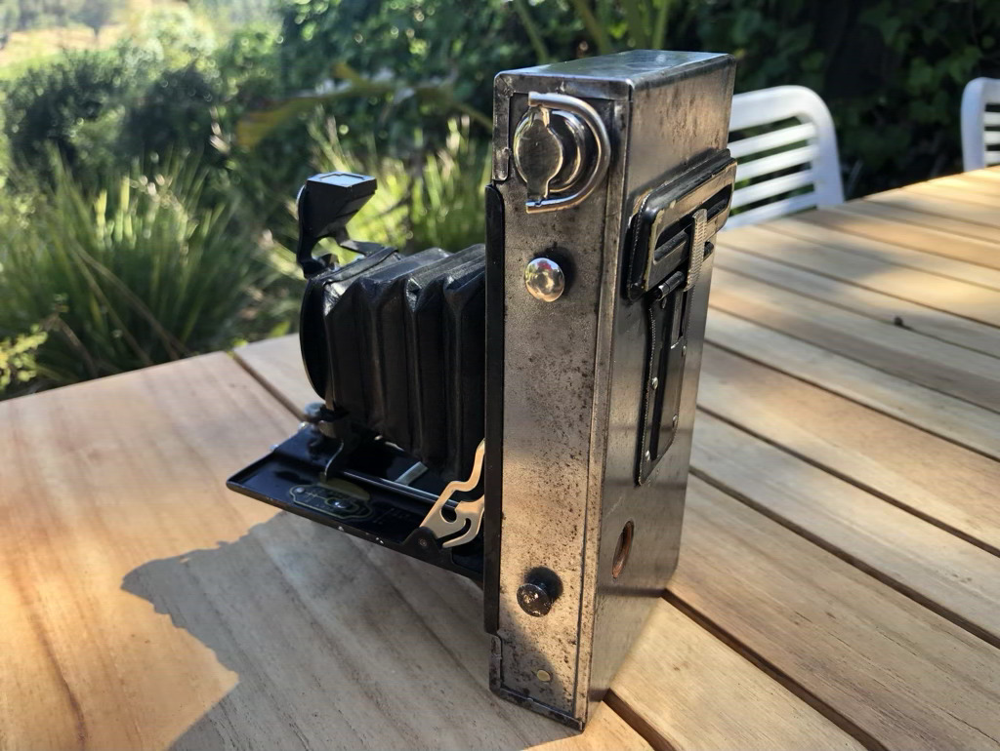
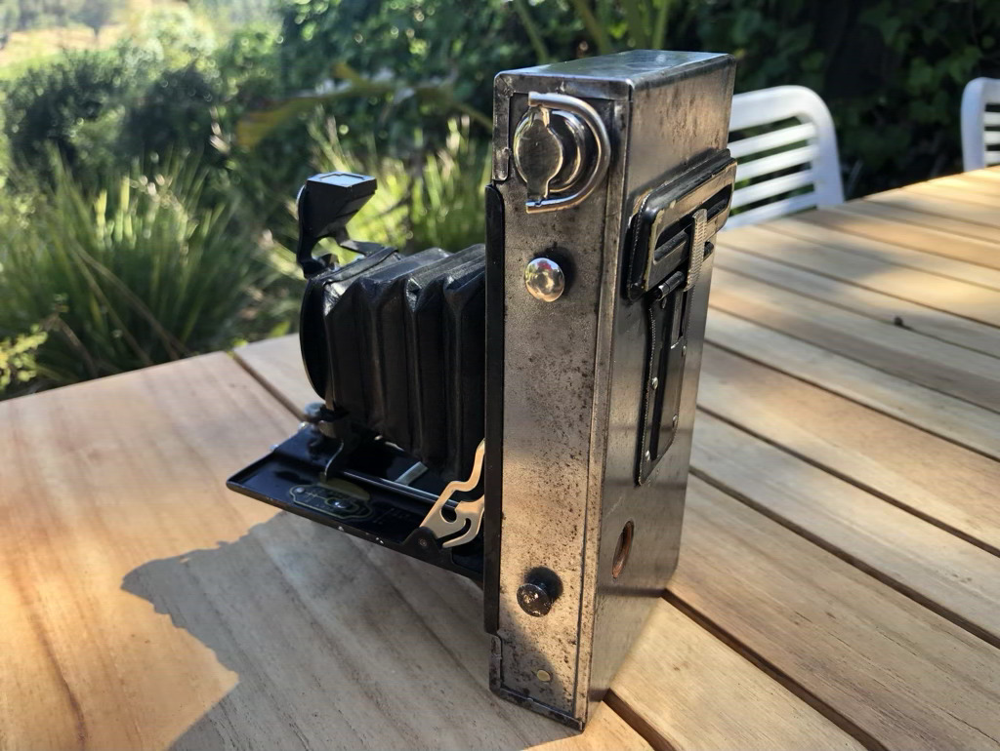

Kodak No. 2 Folding Autographic Brownie
I recently (150222) got a camera!
It's not an especially useful camera, as I still need to get film for it (and because it uses film!), but I think it's neat :D
I found it at an antique fair, in even worse state than the picture shows, and cleaned it up a little. At some point I'd love to get some film for it and see how the photos look, but for now I like just having it on my desk as a little thing to fiddle with (though it's more than 100 years old!)
Edit [060822]
I spent an hour or two properly cleaning it, and it looks so good now! Still definitely a little rusty, but a lot better. I used a rotary tool and some polishing/rust removing paste, first with a wirebrush and then with a buffing bit, and that managed to remove the vast majority of its rust. Most of the remaining rust is pitted into the metal, so I don't think I'll bother trying to remove those patches.
It's still not quite to the point where I'll be taking pictures with it, because I still want to put a covering on it to protect all that shiny new exposed metal from rust and to hide some of my restoration crimes! Also the film for it (kodak 120), is about $60 for 24 photos, so I really want to make sure everything works before I use actual film.
 before
before
 before

before
before

before
 before
before
Incoming: inventory